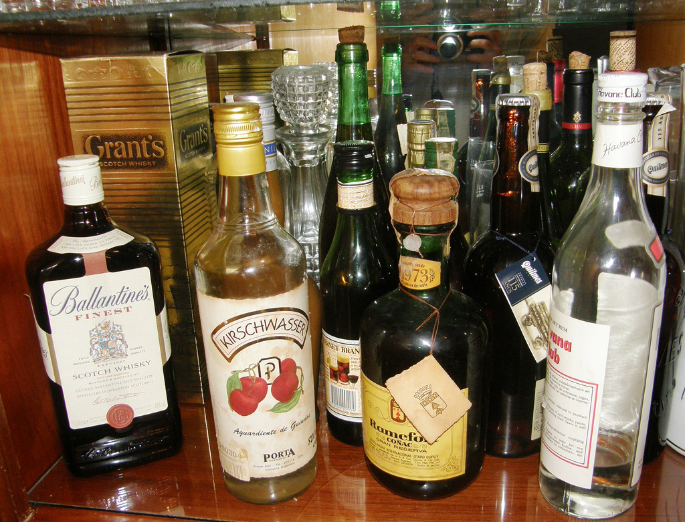

Bressán se pone en pedo
A pesar de que este hecho es algo menor, hay gente que todavía piensa que esto es lo que hace mal a los políticos, que no les interesan a las personas y se dedican a sus vicios. Por eso mismo queremos decirles, que aunque el paparazzi optó por la fotografía en lugar de la masturbación, porque otra cosa no sabe hacer mejor, que lo que hizo Bressán es lo más normal del mundo.
El paparazzi se defecó de la risa, y se fue a donde están los gringos para que sus leyes lo protejan y también para difundir por Facebook las fotos de Bressán borracho, dejando en claro cuán idiotezco es nuestro partido político y las cosas que somos capaces de hacer. Nosotros lamentablemente no podemos mostrar la imagen ya que si no, nuestro comandante nos raja a la bosta. Ya lo vamos a cagar al paparazzi, no se preocupen.

Otras bebidas encontradas perfectamente ordenadas cerca de un armario
Para entender mejor la historia la resumiremos un poco.
Como recién amanecía, los padres de nuestro comandante llamaron preocupados y como escuchaban que su hijo no contestaba, llamaron a la policía, la cual siempre va acompañada de periodistas chupatrastes que les interesa todo lo que pasa. Obviamente lo encontraron y le preguntaron que había pasado, a lo que Bressán contestó: "Y mirá, todos nos vamos a morir, son todos una caca y yo me voy a quedar con toda la guita, che bancame un matraco loco."
Como muchas personas dicen, los borrachos son más sinceros y dicen la verdad, aunque en cierto modo tenemos una seria desconfianza que lo que haya dicho sea verídico. Pero obviamente callaremos a todo aquel que hable de este tema de nuevo.